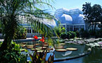
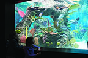
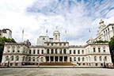
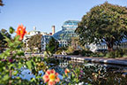

NEW YORK BOTANICAL GARDEN
The New York Botanical Garden is an iconic living museum, a major educational institution, and a renowned plant research and conservation organization. Founded in 1891 and now a National Historic Landmark, it is one of the greatest botanical gardens in the world and the largest in any city in the United States, distinguished by the beauty of its diverse landscape and extensive collections and gardens, as well as by the scope and excellence of its programs.

2900 Southern Blvd., Bronx, NY
https://www.nybg.org/
NEW YORK AQUARIUM
The New York Aquarium is the oldest continually operating aquarium in the United States, having opened in Castle Garden in Battery Park, Manhattan in 1896. Since 1957, it has been located on the boardwalk in Coney Island, Brooklyn. The aquarium is operated by the Wildlife Conservation Society (WCS).The facility occupies 14 acres and boasts 266 species of aquatic wildlife.

Surf Avenue & West 8th Street
Brooklyn, New York 11224
https://nyaquarium.com/
NEW YORK CITY HALL
City Hall is located at the center of City Hall Park in the Civic Center area of Lower Manhattan. The building is the oldest city hall in the United States that still houses its original governmental functions. While the Mayor's Office is in the building, the staff of thirteen municipal agencies under mayoral control are located in the nearby Manhattan Municipal Building, one of the largest government buildings in the world.

City Hall Park, New York, NY 10007
https://www.nycgovparks.org/parks/astoria-park
BROOKLYN MUSEUM
The Brooklyn Museum is an art museum located in the New York City borough of Brooklyn. At 560,000 square feet (52,000 m2), the museum is New York City's third largest in physical size and holds an art collection with roughly 1.5 million works. Was planned to be the largest art museum in the world.The museum also has a "Memorial Sculpture Garden" which features salvaged architectural elements from throughout New York City.
200 Eastern Pkwy, Brooklyn, NY 11238
https://www.brooklynmuseum.org/
BROOKLYN BOTANICAL GARDEN
A botanical garden in the borough of Brooklyn in New York City. Founded in 1910, and located in the Prospect Park neighborhood, the 52-acre (21 ha) garden includes a number of specialty "gardens within the Garden", plant collections and the Steinhardt Conservatory, which houses the C. V. Starr Bonsai Museum, three climate-themed plant pavilions, a white cast-iron and glass aquatic plant house, and an art gallery. The Garden holds over 14,000 taxa of plants and each year has over 900,000 visitors.

990 Washington Ave, Brooklyn, NY 11225
https:/www.bbg.org/